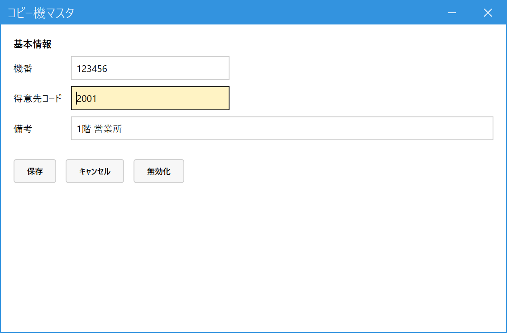

Register Copiers (Copier Master / コピー機マスタ)
When to use this
Link each copier's machine number (機番) to the customer that uses it. When you import the manufacturer's CSV, the system uses what is registered here to decide which customer's sale each machine number belongs to.
Rows with a machine number that is not registered cannot be imported.
Link each copier's machine number (機番) to the customer that uses it. When you import the manufacturer's CSV, the system uses what is registered here to decide which customer's sale each machine number belongs to.
Rows with a machine number that is not registered cannot be imported.
1.Register a machine number
In the main menu, open Master Management (マスタ管理), then open Copier Master (コピー機マスタ). Enter the machine number (機番) and press Enter (if it is already registered, its details appear; if not, keep entering as a new registration).

- Machine number (機番): Enter the same number as the "機番" (machine number) in the CSV.
- Customer code (得意先コード): The customer that uses the copier. You can search with Space. You can only choose customers that have not been deactivated.
- Remarks (備考): A note such as the installation location (optional).
- Press Save (保存) to register. For a machine number you no longer use, press Deactivate (無効化).
You can link more than one machine number to a single customer (register each machine number once).
When you start using the CSV import, you must also register a generic product "COPYCHG" in Product Master (商品マスタ). For details, see Import Copier Sales (CSV).